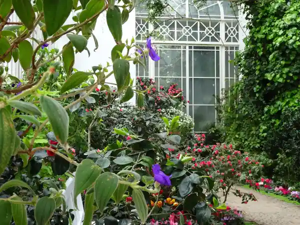
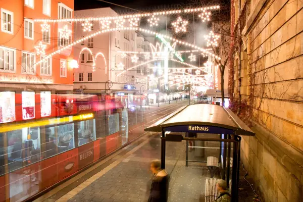
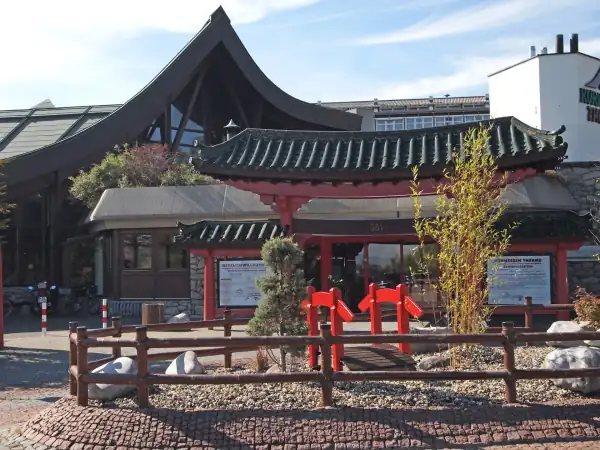

Start / Im Winter
Aaron Schiele
geprüft am
geprüft am
Was kannst du im Winter im Bergpark machen?
Der Bergpark Wilhelmshöhe ist das ganze Jahr geöffnet, die Wege kosten nichts. Im Winter gehören sie vor allem Spaziergängern.
Das Herkules-Monument selbst ist in den Wintermonaten geschlossen, geöffnet ist es vom 1. April bis 31. Oktober. Das Besucherzentrum am Herkules hat dagegen auch im Winter offen, dienstags bis sonntags und an Feiertagen von 10 bis 17 Uhr, mit Ausstellung, Shop und kleinen Erfrischungen.
Unten im Park bleibt Schloss Wilhelmshöhe dienstags bis sonntags von 10 bis 17 Uhr geöffnet. Die Löwenburg kannst du von November bis März freitags bis sonntags und an Feiertagen von 10 bis 16 Uhr besichtigen, mit Führung zur vollen Stunde. Mehr zum Park unter Bergpark Wilhelmshöhe.
Warum lohnt sich das Große Gewächshaus im Winter?

Das Große Gewächshaus im Bergpark öffnet nur in der kalten Jahreszeit, vom 1. November bis 31. März. Draußen ist es grau, drinnen blühen Orchideen und Kamelien, dazwischen stehen Palmen und Bananen. Kurfürst Wilhelm II. ließ es ab 1822 bauen, als eine der frühesten Konstruktionen aus Glas und Stahl in Europa.
Geöffnet ist dienstags bis sonntags und an Feiertagen von 10 bis 17 Uhr, letzter Einlass um 16.30 Uhr. Der Eintritt läuft über das Tagesticket Wilhelmshöhe für 8 Euro, ermäßigt 5 Euro, unter 18 Jahren frei. Mit demselben Ticket kommst du am selben Tag auch ins Schloss Wilhelmshöhe und in die Löwenburg.
Wann ist der Weihnachtsmarkt in Kassel?
Der Märchenweihnachtsmarkt läuft 2026 vom 23. November bis 30. Dezember, täglich von 11 bis 20 Uhr, die Gastronomie bis 22 Uhr. Vom 24. bis 26. Dezember ist er geschlossen. Das Märchen des Jahres ist „Das tapfere Schneiderlein“.
Die Stände ziehen sich durch die Innenstadt vom Königsplatz bis zum Friedrichsplatz, dort drehen sich das Riesenrad und der Märchenwald. Bis zum 23. Dezember fliegt jeden Tag um 17 Uhr der Weihnachtsmann über Opernplatz und Friedrichsplatz. Alles zu Ständen, Tram und Parken steht unter Weihnachtsmarkt Kassel.
Wo wärmst du dich nach einem kalten Tag auf?
In der Kurhessen-Therme in Bad Wilhelmshöhe, direkt am Rand des Bergparks. Das Außenbecken und das Innenbecken haben je 31 Grad mit reiner Thermalsole, die Hot Whirlpools 37 Grad. Im Dampf über dem Außenbecken liegt der Winter plötzlich ganz weit weg.
Zur Saunawelt gehören acht Saunen, ein Römisches Dampfbad und ein Saunasee mit rund 20 Grad. Die Wasserrutsche draußen ist seit dem 1. November 2026 wegen der Wintersaison geschlossen. Über die Feiertage gelten eigene Zeiten: Am 24. Dezember bleibt die Therme zu, am 31. Dezember ist sie von 9 bis 16 Uhr und am 1. Januar von 12 bis 22 Uhr geöffnet. Die Tram 1 hält an der Haltestelle Kurhessen-Therme. Preise und Tipps stehen unter Kurhessen Therme.
Was machst du an einem nassen Wintertag?
Im Planetarium in der Orangerie schaust du in einen künstlichen Sternenhimmel, Vorführungen gibt es donnerstags bis sonntags und an Feiertagen zwischen 10 und 17 Uhr. Erwachsene zahlen 8 Euro, unter 18 Jahren 2 Euro, Kinder unter drei Jahren dürfen nicht in den Saal. Am 24., 25. und 31. Dezember ist geschlossen.
Hört der Regen kurz auf, lohnt das Dach der Grimmwelt am Weinberg: Es ist das ganze Jahr geöffnet und kostet keinen Eintritt. Weitere Ideen für drinnen findest du unter Kassel bei Regen.
Was ist in Kassel im Winter geschlossen?
| Ort | Wann geöffnet |
|---|---|
| Herkules-Monument | 1. April bis 31. Oktober |
| Weinbergterrassen | 1. April bis 31. Oktober |
| Insel Siebenbergen | 1. April bis 31. Oktober |
| Wasserrutsche der Kurhessen-Therme | im Winter geschlossen |
Die Wasserspiele laufen ebenfalls nur im Sommer, 2027 vom 1. Mai bis 3. Oktober. Mehr dazu unter Wasserspiele Kassel.
Häufige Fragen
Ist der Herkules im Winter geöffnet?
Das Herkules-Monument ist in den Wintermonaten geschlossen und öffnet wieder am 1. April. Der Bergpark rund um den Herkules ist aber das ganze Jahr frei zugänglich, und das Besucherzentrum am Herkules hat dienstags bis sonntags von 10 bis 17 Uhr offen.
Wann hat das Große Gewächshaus in Kassel geöffnet?
Das Große Gewächshaus ist vom 1. November bis 31. März dienstags bis sonntags und an Feiertagen von 10 bis 17 Uhr geöffnet, im Sommer bleibt es geschlossen. Der Eintritt läuft über das Tagesticket Wilhelmshöhe für 8 Euro.
Wann ist der Weihnachtsmarkt in Kassel 2026?
Der Märchenweihnachtsmarkt ist vom 23. November bis 30. Dezember 2026 täglich von 11 bis 20 Uhr geöffnet, vom 24. bis 26. Dezember ist er geschlossen.
Lohnt sich der Bergpark im Winter?
Ja, der Park ist das ganze Jahr ohne Eintritt offen. Dazu kommen das Große Gewächshaus, das nur im Winter öffnet, Schloss Wilhelmshöhe und an Wochenenden die Löwenburg.
Was kann man in Kassel im Winter drinnen machen?
Gut geeignet sind das Große Gewächshaus, das Schloss Wilhelmshöhe, das Planetarium in der Orangerie und die Kurhessen-Therme, die täglich von 9 bis 22 Uhr geöffnet ist.
Quellen abgerufen am 16.11.2026
- Stadt Kassel Bergpark Wilhelmshöhe · Grimmwelt · Wasserspiele
- Hessen Kassel Heritage Großes Gewächshaus · Herkules · Besucherzentrum Herkules · Schloss Wilhelmshöhe · Löwenburg · Planetarium · Insel Siebenbergen
- Märchenweihnachtsmarkt Kassel Märchenweihnachtsmarkt Kassel · Highlights
- Kurhessen-Therme Kurhessen-Therme · Thermalwelt
- Visit Kassel Weinbergterrassen
Weiterlesen

Weihnachtsmarkt Kassel 2026
Märchenweihnachtsmarkt Kassel 2026: vom 23. November bis 30. Dezember, täglich 11 bis 20 Uhr. Standorte, Highlights, Tram, Parken und Anreise.
Weiterlesen
Kurhessen Therme Kassel
Kurhessen Therme in Kassel: Preise mit Stand, Öffnungszeiten, Sauna, Regeln für Tagesgäste, Anreise mit Tram 1 und der Weg zum Bergpark.
Weiterlesen
Kassel bei Regen
Kassel bei Regen: Schloss Wilhelmshöhe, Grimmwelt, Naturkundemuseum, Landesmuseum, Planetarium und Kurhessen-Therme mit Öffnungszeiten und Preisen.
Weiterlesen